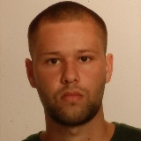
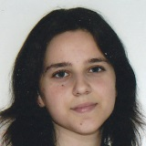

Ing. Peter Drahoš, PhD.
Viac...
Výskumný pracovník na Fakulte informatiky a informačných technológií Slovenskej technickej univerzite v Bratislave. Okrem výskumu na fakulte vyučuje predmety Princípy počítačovej grafiky a spracovania obrazu a paralelené programovanie.

Erik Bujna
Viac...
Študent odboru Softvérové systémy, kde sa prihlásil po absolvovaní bakalárskeho štúdia v odbore Informatika. Vo svojej bakalárskej práci skúmal oblasť spracovania prirodzeného jazyka. Má skúsenosti s programovacími jazykmi Java, C a databázovým systémom MySQL.

Mário Csaplár
Viac...
Absolvent bakalárskeho študijného programu Počítačové a komunikačné systémy a siete má viac než 6 ročné skúsenosti s programovacím jazykom C najmä vďaka reverznému inžinierstvu a analýze dátových štruktúr. Vytvoril niekoľko rozsiahlych webových projektov v technológiách xHTML, CSS, JavaScript (jQuery), MySQL, PHP. Medzi ďalšie používané jazyky patria C#, Java a VHDL. Jeho prednosťou je znalosť jazykov, venuje sa prekladu anglických textov rôznych žánrov do slovenčiny a korektúre textu po jazykovej aj formálnej stránke.

Michal Dobai
Viac...
Vytvára projekty najmä v programovacom jazyku C# na platforme .NET, pričom s uvedenými technológiami má viac ako 5 ročné skúsenosti. Vďaka tvorbe knižničného systému nadobudol skúsenosti s databázovými technológiami, najmä so systémom MS SQL. Taktiež má prax vo vývoji aplikácií s používateľským prostredím založeným na Modern UI pre operačný systém Winows 8.1, respektíve Windows 10. K jeho prednostiam patrí tiež zrozumiteľné a presvedčivé odprezentovanie výsledkov práce tímu.
Lukáš Doubravský
Viac...
Zaujíma sa hlavne o hardvér na mieru a tvorbu prislúchajúceho softvéru. Má skúsenosti od jazyka symbolických inštrukcií až po vysoko-úrovňové jazyky, napr. C#. Pracoval s rôznymi architektúrami a zariadeniami, akými sú PIC16F628A, 8086, 386EX, PXA255, Arduino Nano. Je oboznámený s tvorbou webových stránok s použitím HTML, CSS, PHP a MySQL. Zaujíma sa aj o tvorbu grafiky a videí.

Lenka Kutlíková
Viac...
Študentka informačných systémov, kde sa prihlásila po absolvovaní bakalárskeho štúdia v odbore informatika na Fakulte informatiky a informačných technológií. Má skúsenosti s programovacími jazykmi Java a C++, s databázami (PostgreSQL), grafikou (OpenGL) a webovými technológiami (HTML, CSS).

Martin Petráš
Viac...
Študuje na Fakulte informatiky a informačných technológií v odbore Informačné systémy. Bakalárske štúdium absolvoval na tej istej fakulte v odbore Informatika. Stretol sa s programovaním v jazykoch C++, Java, JavaScript, HTML, SQL, CSS. Má skúsenosti s technológiami ako OpenGL, GLSL, Qt.

Ondrej Vlček
Viac...
Absolvent bakalárskeho štúdia na Fakulte informatiky a informačných technológií v študijjnom programe Informatika. Prvák na inžinierskom stupni na rovnakej fakulte v študijnom programe Softvérové inžinierstvo. Skúsenosti v jazykoch C, Java, Ruby, HTML a PHP. Skúsenosti s tvorbou internetových obchodov a webových stránok.